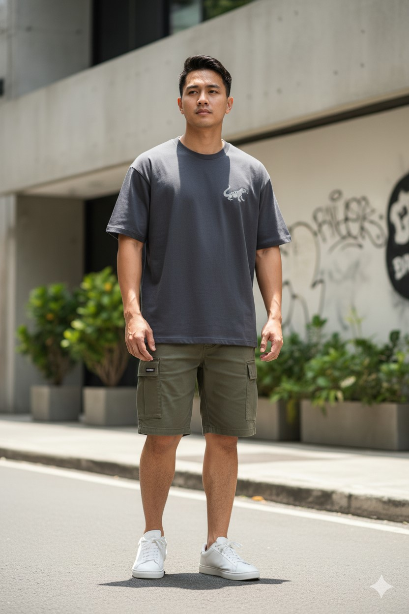
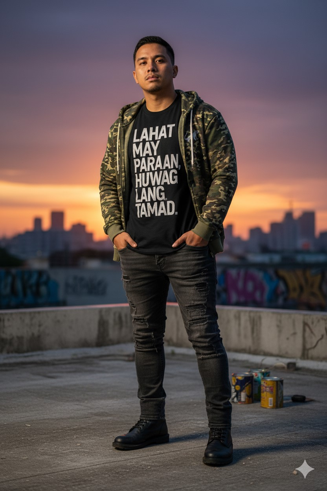
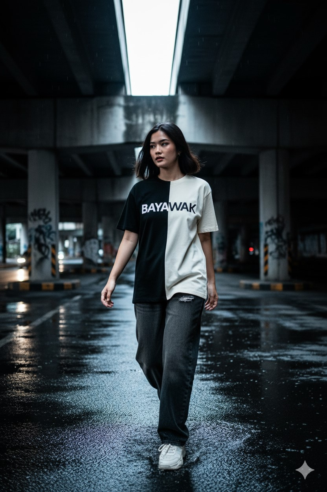
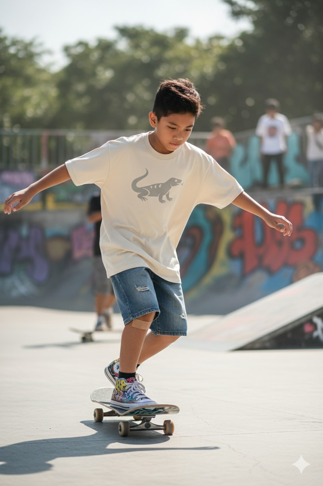
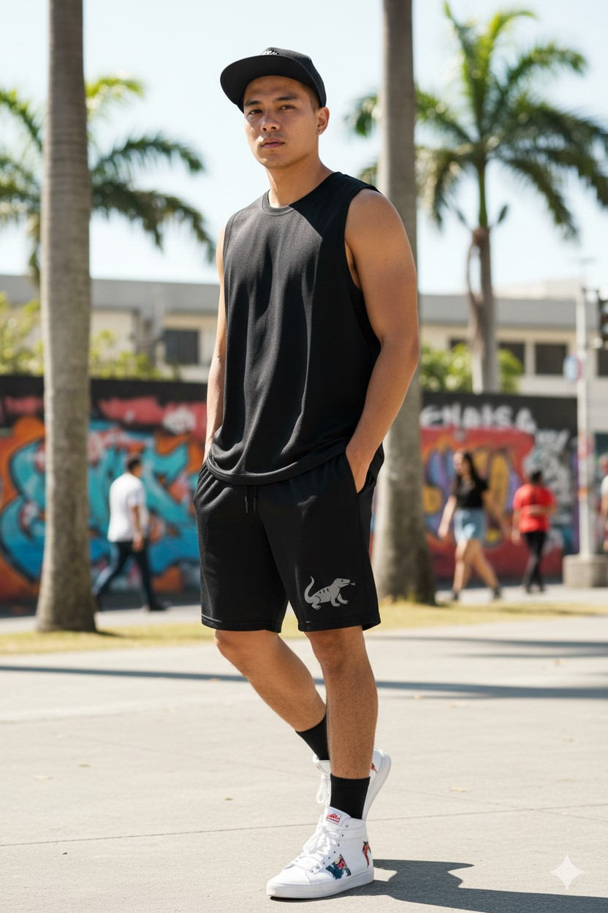
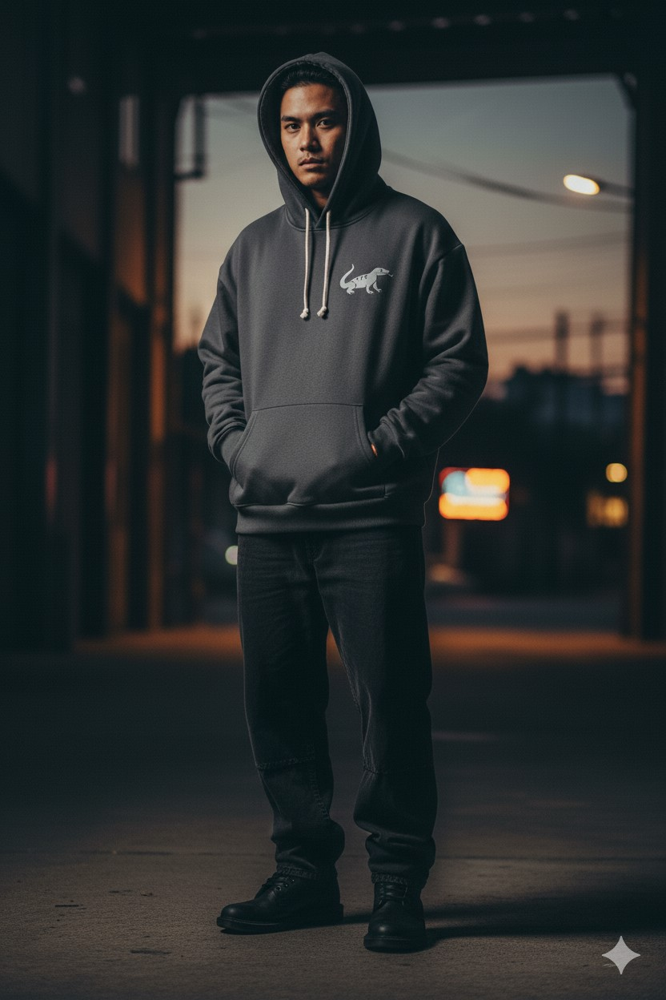

Bayawak Clothing styled in the wild, from rooftops to underpasses, skateparks to street corners. This Lookbook is your guide to wearing the grind.

Bayawak Core Tee styled with Bagawak Cargo and white kicks - clean, urban, everyday.

Kalye Statement Tee layered with Gubat Camo Hoodie - rooftop-ready with attitude.

Tagpo Split Tee in motion at the underpass - contrast and movement in one frame.

Scales Oversized Tee styled for grind - oversized comfort meets skatepark energy.

Init Mesh Shorts paired with - breathable and bold for hot days.

Bayawak Signature Hoodie in low light - built for the grind, even after dark.